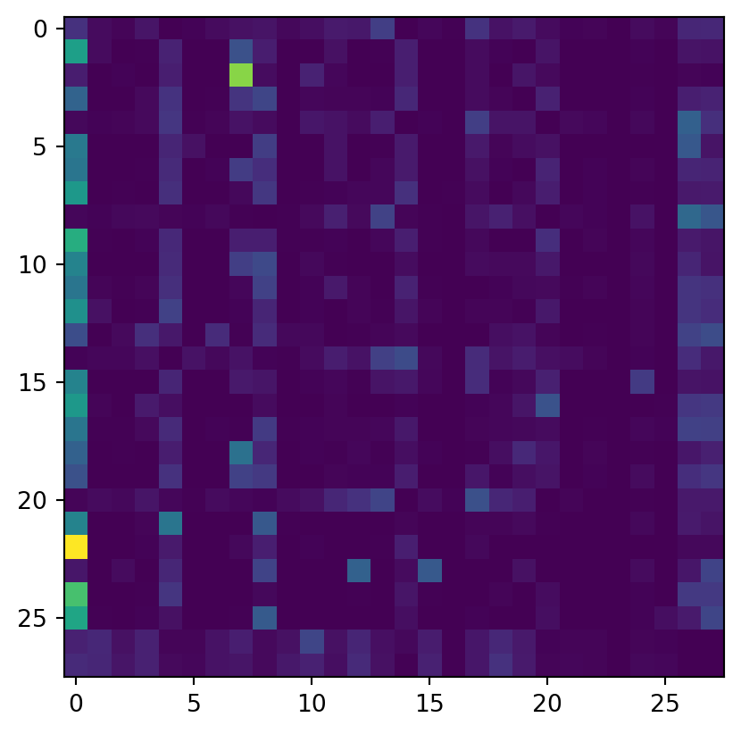

In this series of posts we will follow along Andrej Karpathy’s series of videos about building a language model. In this post we’re implementing the first model from the video:
Consider text in a language to be a stream of tokens. The set of all possible tokens is the vocabulary. A token can be any sequence of bytes. The simplest possible tokens are just single ASCII characters.
The task of language modeling is to learn the probability distribution:
\[
P(t_{n+1} | t_1 ... t_n)
\]
where:
\(t_1 ... t_n\) is the context, a sequence of previous tokens.
\(t_{n+1}\) is the next token.
Dataset
In this series we’ll use a dataset of Bollywood movie names with the goal of making more movie names (hence “makemore”).
import pandas as pddef read_movie_names() ->list[str]: movies = pd.read_csv("data/movies.csv")def has_special_chars(name: str) ->bool: AZ =set("ABCDEFGHIJKLMNOPQRSTUVWXYZ ")returnlen(set(name) - AZ) >0return [ n.upper()for n inlist(movies.query("Language == 'hindi'")["Movie Name"])ifnot has_special_chars(n.upper()) ]MOVIES = read_movie_names()print(f"Number of names: {len(MOVIES)}")sample_names ="\n\t".join(MOVIES[5584:5589])print(f"Sample names:\n\n\t{sample_names}")
Number of names: 12900
Sample names:
BAAZIGAR
PARDES
ANURAG MAURYA ACT
BLACK MARKET
AKHIYON SE GOLI MAARE
We’ll write a small utility function to “unit-test” code in this notebook.
The first model we build will be based on bigrams, two-character strings. The set of tokens will be: {'A', 'B', ..., 'Z', ' ', '.'}. The size of this vocabulary is 28. The special token . will be used to indicate the beginning and end of each word.
The probability function “learned” by this model will just be the frequency of bigrams occuring in the training set. For that we first need a way to turn tokens into numbers and vice-versa.
Encoding and decoding
We’ll map tokens to numbers using the functions below. The unit-test assertions explain how they work.
def stoi(s: str) ->int:assertlen(s) ==1if s ==".":return27elif s ==" ":return26else:returnord(s) -ord("A")verify(all([ stoi('A') ==0, stoi('Z') ==25, stoi(' ') ==26, stoi('.') ==27]))
✅
def itos(i: int) ->str:if i ==27:return"."elif i ==26:return" "else:returnchr(i +ord("A"))verify(all([ itos(0) =='A', itos(25) =='Z', itos(26) ==' ', itos(27) =='.']))
✅
Training
The “training” of this model just involves counting the frequencies of each bigram in the training corpus (set of movie names) and computing probabilities by normalizing. The code below is vectorized using PyTorch for performance. The broadcasting semantics of PyTorch/NumPy code can be tricky, so we have to be careful when using arguments like keepdim=True. In the video Karpathy mentions how leaving out keepdim=True in the call to sum() runs without crashing but yields the wrong probabilities.
import torchdef train(corpus: list[str]) -> torch.tensor: N_TOKENS =28 counts = torch.zeros((N_TOKENS, N_TOKENS))for name in corpus: name ="."+ name +"."for c, c_next inzip(name, name[1:]): counts[stoi(c), stoi(c_next)] +=1# Normalize the counts into probabilities on each rowreturn counts / counts.sum(1, keepdim=True)model = train(MOVIES)
We can visualize the probability distribution computed by this model.
import matplotlib.pyplot as pltplt.imshow(model)

Sampling
Given a context (a single letter), we generate the next token (letter in this case) by taking a sample from the probability distribution of the next token conditioned on the context. This distribution is the row vector model[stoi(context), :] and multinomial takes a sample from it.
To generate a new movie name we start with the special token . and sample to get the next token. We sample again using this new token as the context, and keep going until the sampling returns the special token . again. We do this n times to generate many movie names.
def generate(model: torch.tensor, n: int) ->list[str]: names = []for i inrange(n): result ="" token ="."whileTrue: token = sample(model, token)if token =='.':break result += token names.append(result)return namesgenerate(model, 5)
['ANTI', 'MANA', 'QA COVECAR MAM BA SQLT', 'PANANTADA', 'I BAI DHAGUB LI']
Given that we’re only using bigrams it’s unlikely that the model will even come up with real words, but we can see that it’s getting close to generating syllables that kinda sound like Hindi/Urdu.
Loss function
Let us consider the entire set of movie names and call it the corpus. We can think of each bigram in it as a training example. Since our language models only look at their limited context, it doesn’t matter that these examples come from different “documents” (individual movie names).
Now consider an arbitrary language model \(M\) (i.e., not necessarily bigram). As defined above, \(M\) should allow us to compute the probability of any \((t_1 ... t_n, t_{n+1})\) sequence. That is, given a context \(t_1 ... t_n\), the probability of every possible next token \(t_{n+1}\).
Given such a model, we can define the likelihood that it produces our corpus \(c\). This likelihood is the probability that all possible (context, next_token) pairs that are found in the corpus occur at the same time. Thus the likelihood is computed as the product of the model’s probabilities for all such pairs.
where each \(p(x_i)\) is the probability of the \(i\)th training example.
A couple of things to note here:
When a bigram appears multiple times in the corpus, there is one term for each occurence when computing \(L\).
Since we’re using the product rule to multiply the probabilities, there is an implicit assumption that all training examples are independent. That is, we’re assuming that the occurence of one bigram has no influence on others.
Let’s work out the loss for the bigram model. Consider the corpus SHOLAY. It consists of the bigrams {'.S', 'SH', 'OL', 'LA', 'AY', 'Y.'}. We’ve added an extra token . to signify the beginning and end. Assume now that M is a Python function that returns the probability of the next letter given a letter, so for example M('S', 'H') is the probability that H follows an S. The likelihood of SHOLAY under this model is therefore:
(This might seem a bit pointless and circular for the bigram frequency language model. But this is setting up a concept that’ll be useful later for the neural network models).
We’ll now make a couple of tweaks to make the floating point math better. Instead of working with likelihoods that are very small numbers (because they are the products of many numbers less than \(1\)), we will instead compute the negative log-likelihood.
The average negative log-likelihood is our loss function and has an intuitive meaning. It is a single number that allows us to measure how well the model has learnt to approximate its training set.